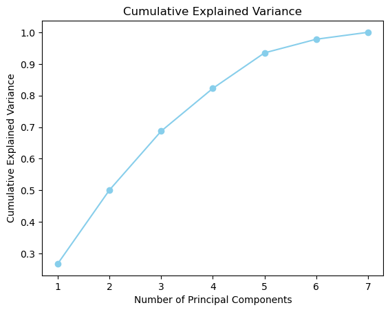

Code
import pandas as pd
from sklearn.decomposition import PCA
from sklearn.preprocessing import StandardScaler
import matplotlib.pyplot as plt
from sklearn.preprocessing import LabelEncoder
import numpy as npPCA stands for principal component analysis. It is a machine learning technique that is used to reduce the dimensionality of large datasets. The goal of PCA is to reduce the number of variables while preserving as much information as possible. (“Principal Component Analysis (PCA) Explained Built In” n.d.)
PCA can be broken down into five steps:
I will walk through these steps and code within this tab.
To learn more about PCA in depth this is a good resource here.
The objective of PCA on my data is to reduce the dimensionality.
I will be applying PCA to my merged dataset that includes the variables, Aqua Production, Marine Protected Areas, Inventions, Instruments, Fishing Exports and % of policy instruments related to ocean policy.
I will complete PCA in Python.
import pandas as pd
from sklearn.decomposition import PCA
from sklearn.preprocessing import StandardScaler
import matplotlib.pyplot as plt
from sklearn.preprocessing import LabelEncoder
import numpy as nppca = pd.read_csv("/Users/kendallgilbert/dsan-5000-project-kendallgilbert180/dsan-website/5000-website/data/01-modified-data/nb_record.csv")
label_encoder = LabelEncoder()
pca['Country'] = label_encoder.fit_transform(pca['Country'])
pca.head(5)| Aqua Production (Millions) | Marine Protected Area (sqkm) | Inventions (number) | Instruments (number) | Fishing Exports (Millions) | Value | Country | Year | |
|---|---|---|---|---|---|---|---|---|
| 0 | 376896.50 | 485.10 | 12.00 | 5.0 | 1963.38 | 10.64 | 11 | 2000 |
| 1 | 55.25 | 5.65 | 0.33 | 0.0 | 739.13 | 0.00 | 12 | 2000 |
| 2 | 24661.75 | 605.08 | 23.33 | 8.0 | 4431.00 | 5.23 | 13 | 2000 |
| 3 | 8849.75 | 2124.58 | 1.00 | 4.0 | 3118.12 | 19.05 | 14 | 2000 |
| 4 | 29421.75 | 235.18 | 0.00 | 0.0 | 321.71 | 0.00 | 15 | 2000 |
X = pca.drop(columns=['Value'])
scaler = StandardScaler()
X_standardized = scaler.fit_transform(X)Covariance measures how two features vary with each other. A positive covariance indicates that features increase and decrease together. Whereas, a negative covariance indicates that the two features vary in the opposite directions (“Principal Component Analysis (PCA) Explained Built In” n.d.). This matrix includes all covariances associated with all possible pairs of the initial variables.
cov_matrix = np.cov(X_standardized, rowvar=False)
print(cov_matrix)[[ 1.00194175e+00 -3.04942139e-02 1.51154291e-01 2.28111425e-01
2.73660218e-02 1.38684735e-01 1.62827020e-01]
[-3.04942139e-02 1.00194175e+00 7.50535697e-02 -1.08844021e-01
8.28653563e-01 -2.56626522e-01 6.55735651e-02]
[ 1.51154291e-01 7.50535697e-02 1.00194175e+00 8.17036100e-02
1.13743345e-01 1.80950218e-01 4.18881528e-02]
[ 2.28111425e-01 -1.08844021e-01 8.17036100e-02 1.00194175e+00
6.12700946e-02 -3.21702201e-02 1.10964957e-01]
[ 2.73660218e-02 8.28653563e-01 1.13743345e-01 6.12700946e-02
1.00194175e+00 -2.00780688e-01 1.10897521e-01]
[ 1.38684735e-01 -2.56626522e-01 1.80950218e-01 -3.21702201e-02
-2.00780688e-01 1.00194175e+00 3.23365930e-18]
[ 1.62827020e-01 6.55735651e-02 4.18881528e-02 1.10964957e-01
1.10897521e-01 3.23365930e-18 1.00194175e+00]]Eigen values and eigen vectors are a linear algebra concept. These values are computed from the covariance matrix and help with determining the principal components.
Principal components are new variables that are constructed as linear combinations or mixtures of the initial variables. These combinations result in new variables (i.e., principal components) that are uncorrelated and most of the information within the initial variables is squeezed or compressed into the first components.(“Principal Component Analysis (PCA) Explained Built In” n.d.).
eigenvalues, eigenvectors = np.linalg.eig(cov_matrix)
print("Eigenvalues:")
print(eigenvalues)
print("Eigenvectors:")
print(eigenvectors)Eigenvalues:
[1.96252593 1.46708555 0.15337595 1.08890623 0.67420997 0.76242139
0.90506723]
Eigenvectors:
[[ 0.01526356 -0.59668919 -0.00340433 -0.10513975 0.41711599 -0.67674432
-0.02635254]
[-0.66857226 0.04306445 0.70717473 0.14755344 -0.09626841 -0.13973334
0.02225876]
[-0.07566051 -0.44005363 0.00433808 0.56052385 0.38207005 0.54299296
-0.21355002]
[ 0.00635882 -0.45852099 0.14085705 -0.49377113 -0.43377731 0.23379086
-0.53220908]
[-0.66268819 -0.083262 -0.69039466 0.08934662 -0.23939662 -0.09756661
-0.04954 ]
[ 0.3048664 -0.30520205 0.05548236 0.53958993 -0.65208579 -0.21847102
0.21616463]
[-0.12212308 -0.3716691 0.01759851 -0.33171763 -0.00893025 0.34021077
0.78789506]]Computing the eigenvectors and ordering them by their eigenvalues in descending order allow us to find the principal components in order of significance. In this step, we discarded low eigen values and form with the remaining ones a matrix of vectors that we call Feature vector.
Principal components represent the directions of the data that explain a maximal amount of variance. Within the code below, I am determing the number of components that maximize the variance.
We can think of principal components as new variables that are constructed as linear combinations or mixtures of the initial variables. They are the new axes that provide the best angle to see and evaluate the data, so that the differences between the observations are better visible.
# Sort eigenvalues in descending order
sorted_indices = np.argsort(eigenvalues)[::-1]
sorted_eigenvalues = eigenvalues[sorted_indices]
# Calculate the cumulative explained variance
cumulative_explained_variance = np.cumsum(sorted_eigenvalues) / np.sum(sorted_eigenvalues)
plt.plot(range(1, len(cumulative_explained_variance) + 1), cumulative_explained_variance, marker='o', color='skyblue')
plt.title('Cumulative Explained Variance')
plt.xlabel('Number of Principal Components')
plt.ylabel('Cumulative Explained Variance')
desired_variance = 0.80 #I want to find the number of variables it takes to reach a variance of 0.90
num_components = np.argmax(cumulative_explained_variance >= desired_variance) + 1
print(f"Number of components to capture {desired_variance * 100}% variance: {num_components}")Number of components to capture 80.0% variance: 5
# Apply PCA with the desired number of components
pca = PCA(n_components=num_components)
X_pca = pca.fit_transform(X_standardized)
# Display the explained variance ratio for each selected component
explained_variance_ratio = pca.explained_variance_ratio_
print("Explained Variance Ratio for Each Component:")
print(explained_variance_ratio)
plt.bar(range(1, len(explained_variance_ratio) + 1), explained_variance_ratio, color='skyblue')
plt.title('Scree Plot')
plt.xlabel('Principal Components')
plt.ylabel('Explained Variance Ratio')Explained Variance Ratio for Each Component:
[0.27981751 0.20917748 0.15525656 0.12904475 0.10870626]Text(0, 0.5, 'Explained Variance Ratio')
These principal components are linear combinations of the original features and provide a new coordinate system capturing the most important patterns in the data. Below I have replotted the scatterplots to show the difference in this dimensionality reduced data.
import seaborn as sns
columns_pca = [f'PC{i}' for i in range(1, num_components + 1)]
df_pca = pd.DataFrame(data=X_pca, columns=columns_pca)
# Export the DataFrame to a CSV file
df_pca.to_csv('pca_transformed_data.csv', index=False)
new = pd.read_csv('/Users/kendallgilbert/dsan-5000-project-kendallgilbert180/dsan-website/5000-website/pca_transformed_data.csv')
sns.pairplot(new, hue='PC4')
plt.show()/Users/kendallgilbert/anaconda3/lib/python3.11/site-packages/seaborn/axisgrid.py:118: UserWarning: The figure layout has changed to tight
self._figure.tight_layout(*args, **kwargs)